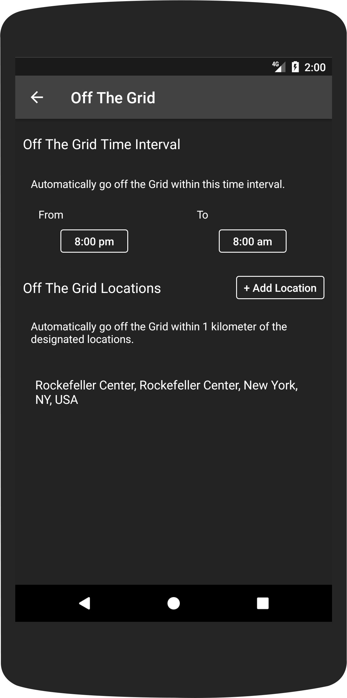

Grid
Passion on the map
Android application that aims to increase mentorship relationships among nearby young adults by introducing them to each other anonymously and purely based on passion through user profiles that consist only of a world cloud of their most passionate interests.
Authentication
Users sign in using their Google Accounts. Their data is stored in the Google Firebase real time database with their generated user ID as the key.
Cloud of Passion
Through user profiles that only consist of a word cloud of the user's most passionate subjects, Grid connects nearby ambitious individuals anonymously and allows them to discover new passions or further indulge in existing ones. Users rate their interests on a scale of 10 to determine the text size of their interests in their word cloud.
Grid
Users are able view the word cloud profiles of nearby users through Google's Map and Places API. Through Node.js backend scripts, a push notification is sent to a user if another user wishes to connect with them. Once both users anonymously wish to connect to one other's word cloud profiles, a push notification will be sent to both users and a conversation between the two will open.
Off the Grid
By choosing to utilize Google's Map API, though users are anonymous, privacy concerns arise with the sharing of precise locations. To protect our users, Off the Grid Settings were created to automatically prevent the display of users on the map during specified times of the day and when within 1 kilometer of specified locations.
